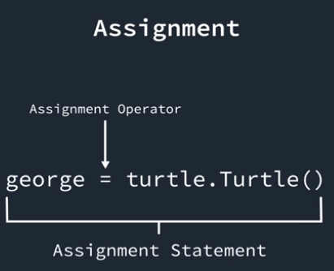
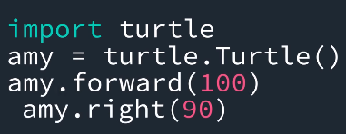

A program is a set of instructions, written on lines of code, for a computer to follow. Each line is an instruction for the computer to follow.
When running a program, the computer will find some free space on the computer and put the data of the program into a space. This prepares the program to run. When we give the program, stored in memory, a named by adding a (name) = code it is known as a variable. A variable is similar to a label/nametag. When connecting a name to data in memory it is known as assignment.

String are anything that is written in quotes. This how programmers and python identify what is a string. for example amy.color("white"), white is a string. Without the quotes, the program will not run.
List are anything in python that is surrounded by [].
Errors are bound to happen in programming. Luckily, most programming languages have a way of identifying error. In python, error messages will appear giving a brief discription of why there is an error, and where it is located(in numbers). Sometimes the line number the error message gives you will not be 100% accurate, but it should bring you relatively close to the location.
Modules are define asA file that has a collection of useful code that can be used in other python programs. To use a modules, you must include an import____ command at the top of the code. In the code below, turtle.Turtle(), the first turtle before the . is calling upon the module that we imported. The . tells the program to look for the code named Turtle inside the turtle module. This also applies to the amy.forward and amy.right commands below; all of these are already written in the turtle module. Lines like amy.forward and amy.right are refered to as method calls. Method calls always have the method followed by () and an input for python to run.
